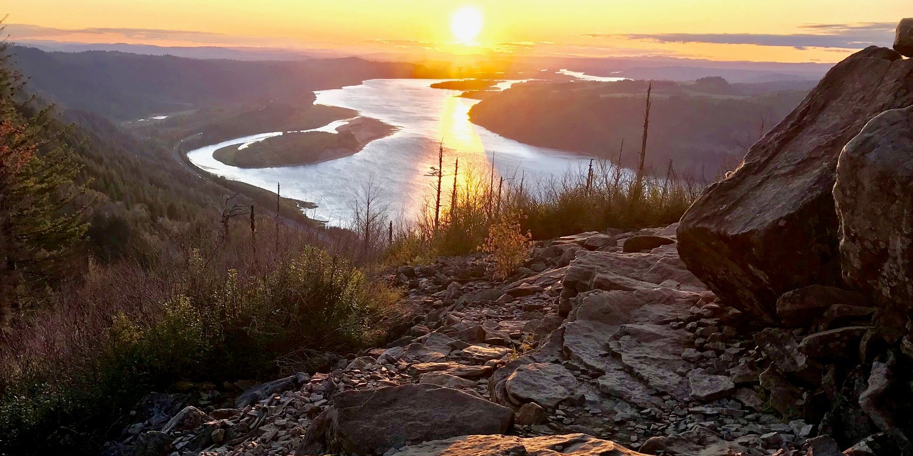
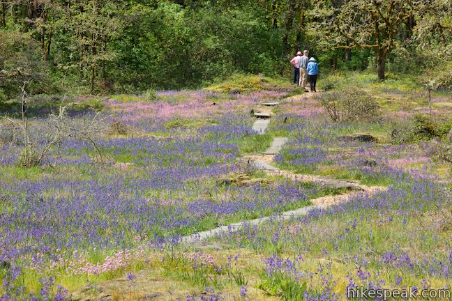
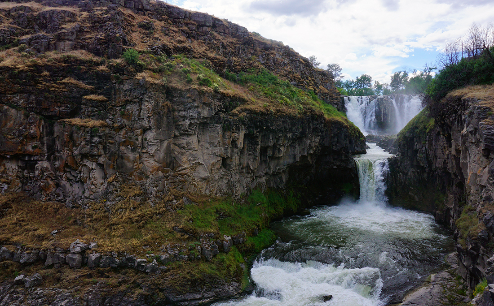

In The City
Watch PDX Adult Soap Box Derby

-
Once a year Mount Tabor park becomes a whacky racetrack. Bringing around 10,000 visitors per year this is an event not to miss.
-
Best time to go: This event takes place in August.
-
Tip: Get coffee or food nearby and then go to the park early to secure a parking and watching spot.
Portland Night Market

-
175+ of Portland's best vendors come together on Friday and Saturday evenings throughout the year celebrating local food, culture, music, drinks and retail.
-
Best time to go: Year-round! But summer for warmth in the evening.
-
Tip: If you go in the winter, go to Smith Teamaker before for a flight of hot tea to get you ready for an evening outside!
Portland Naked Bike Ride

-
Helmet on for safety, clothes off for fun. Join Portland’s World Naked Bike Ride – the largest one in the world – to protest against dependency on oil.
-
Best time to go: It happens in June every year!
Shakespear In The Park

-
See a free Shakespear play in a park, bring snacks and drinks for a perfect and unique and utterly Portland date.
-
Best time to go: Throughout summer.
-
Tip: This happens at parks throughout Portland so check the summer schedule to find a play at a park near you!
Disc Golf at Pier Park

-
Oregon is home to nearly 200 disc golf courses, and a much loved one in the Portland Metro. With new disc golfs costing
only about $20 this is an easy access, year-round activity.
-
Best time to go: This park is great in every season, but summer is extra nice.
-
Tip: Get dinner or drinks in the St Johns neighborhood after (or before)!
First Thursday Art Walk in the Pearl District
-
On the first Thursday of each month walk the streets of the Pearl district with many others to see artists galleries and shop locally.
-
Best time to go: This event runs April-October, but summer always guarantees nice weather.
-
Tip: Parking in the Pearl district can be hard, so park on the East side and walk across the Broadway Bridge.
Last Thursday Art Walk in the Alberta Arts District

-
Not as busy as the Art Walks in the Pearl district, this is a great option for a more chill way to browse local goods.
-
Best time to go: This even is year-round, but outdoor performers tend to be there May-September.
-
Tip: In summer, there’s often live music and dancing!
Bike the Marine Drive Trail
-
The paved Marine Drive trail has sections right along the river with view of Mount Hood. It’s 10 miles roundtrip!
-
Best time to go: Year-round, on a clear day.
-
Tip: Go for sunset in the summer to avoid crowds, or go on nice days in the off season.
Play tennis at your local park
-
Portland is covered in tennis courts! A great summer activity is picking a park near you and having an evening tennis sweat sesh.
Have a picnic or watch the sunset at one of these locations...!
Laurelhurst Park

-
Take a walk or have a picnic in this cute park. Extend it by wandering around the cute neighborhood or walking to nearby food and drink.
-
Best time to go: Year-round, on a dry day.
-
Tip: In the summertime, there’s often free live comedy and silent disco here!
Hikes
Lower Macleay Park to Pittock Mansion

-
Drive time from Portland: 15 minutes
-
Mileage: 5
-
Best time to go: Year-round, on a clear day
-
Tip: Hike past Witches Castle and see a great view of Portland! Option to take a
paid tour of Pittock Mansion when you’re there.
Angles Rest

-
Drive time from Portland: 30 minutes
-
Mileage: 4.5
-
Best time to go: Year-round! Great easy hike for Winter and Spring weekends or a perfect after-work hike in Summer.
Eagle Creek Trail to Tunnel Falls

-
Drive time from Portland: 40 minutes
-
Mileage: 12
-
Best time to go: Winter or Spring for peak flow, after a dry spell for a less muddy trail.
Camassia Preserve Loop Trail

-
Drive time from Portland: 20 minutes
-
Mileage: 1.5
-
Best time to go: April-Early May.
-
Tip: Stop in Oregon City on the way there or back.
Falls Creek Falls Loop

-
Drive time from Portland: 1 hour 15 minutes
-
Mileage: 6
-
Best time to go: April-May.
-
Tip: Pair with a stop in Carson, WA for some food.
White River Falls

-
Drive time from Portland: 2 hours
-
Mileage: 1
-
Best time to go: Spring before the falls dry up.
-
Tip: Make it a weekend trip and camp at Macks Canyon Campground where there’s hiking from your tent.
Columbia Hills Vista Loop

-
Drive time from Portland: 1.5 hours
-
Mileage: 6.5
-
Best time to go: Late April-May for wildflowers.
-
Tip: These wildflowers are lower elevation than Dog Mountain so their peak bloom happens first.
Dog Mountain

-
Drive time from Portland: 1 hour
-
Mileage: 6.5
-
Best time to go: Late May-Early June for wildflowers.
-
Tip: Go after work (eat dinner before!) to avoid crowds and not have to deal with getting a permit. Stay for sunset for the best views.
{kind=link}
{kind=link}
{kind=link}